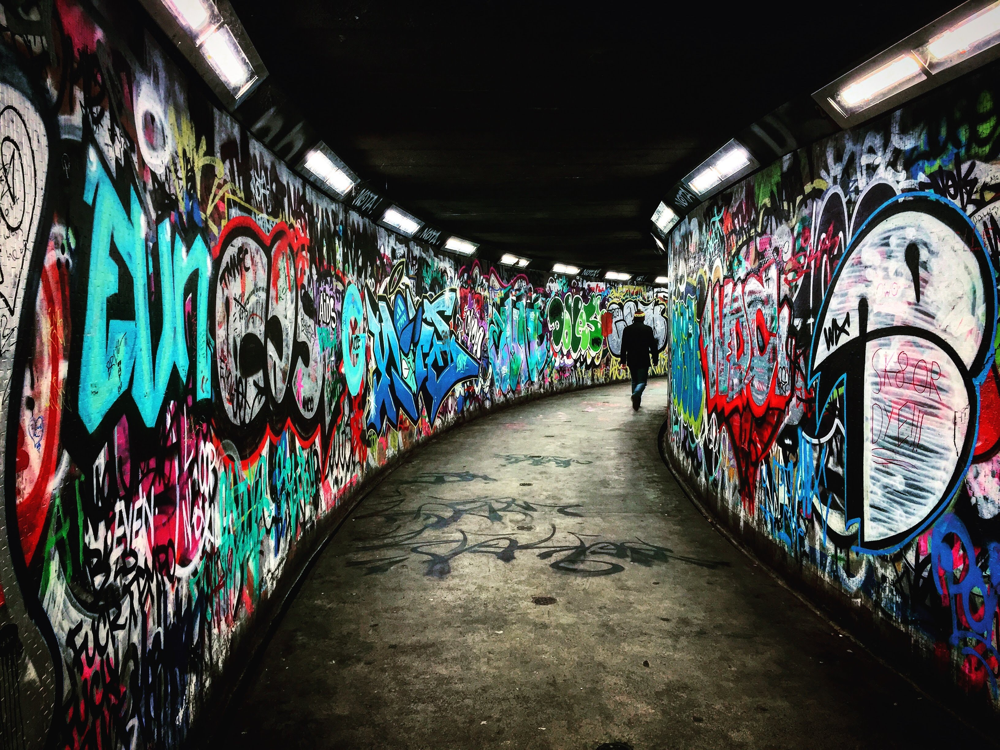
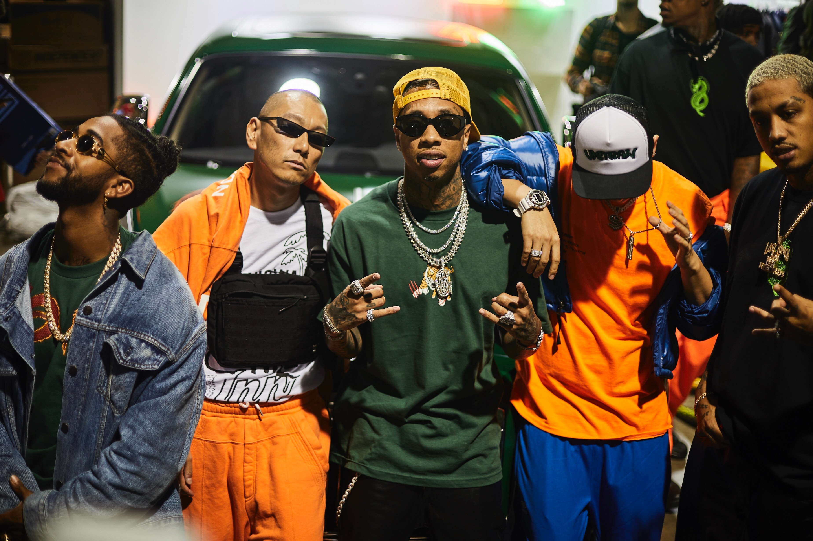
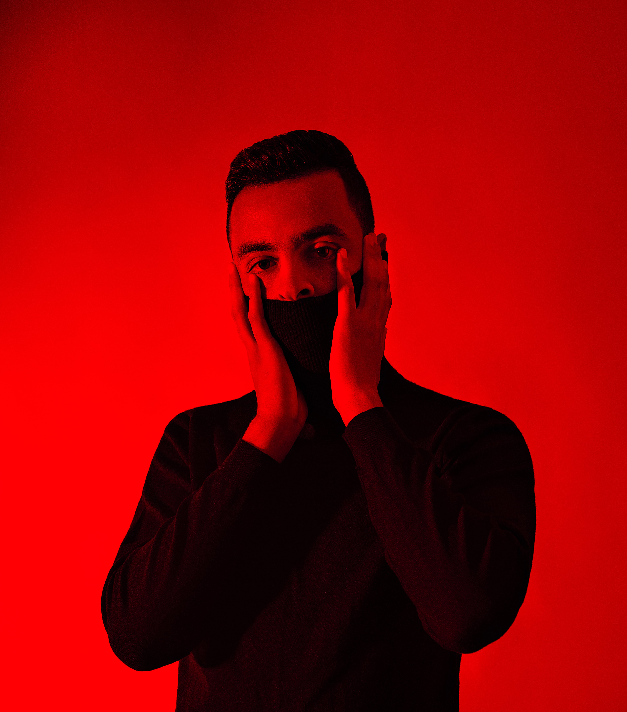
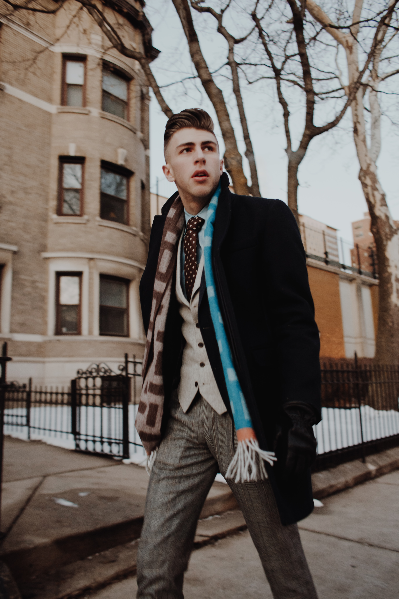
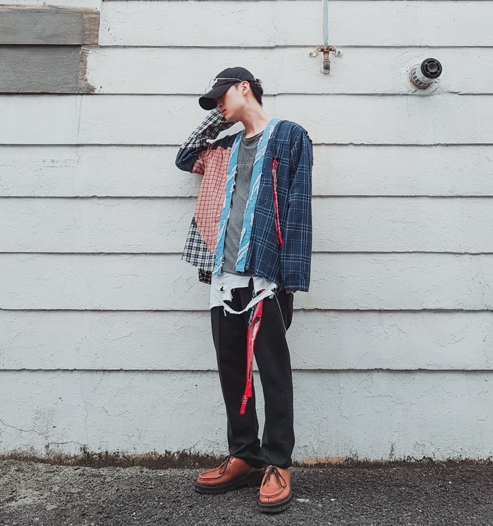

스트릿패션 소개

OLD SCHOOL올드스쿨

OLD SCHOOL 올드 스쿨이란 힙합 음악에서 시기를 규정할 때 사용되는 명칭으로 사용합니다. 힙합 의류와 액세서리를 일컫는 데도 어울리기 때문입니다. 또한 유행 지난 것을 가리키는 일반적인 형용사이기도 해서 올드 스쿨이라는 호칭이 쉽게 쓰이고 있습니다. 올드스쿨룩이 국내에서 처럼 저런 깔끔하고도 적당히 헐렁한 옷이 힙합 패션으로 자리 잡은 시기는 90년대 초반 몹 톱 크루(Mop Top Crew), 미스피츠(Misfits) 같은 뉴욕의 댄서들이 힙합의 패션을 주도했을 때 입니다. 이때 게스(Guess), 리바이스(Levi's) 같은 청바지의 루즈핏,오버핏 의류를 입거나 큰 치수를 입어 오버핏의 스타일을 연출했습니다. 그리고 타미 힐피거(Tommy Hilfiger), 폴로 랄프 로런(Polo Ralph Lauren) 같은 브랜드들이 출시한 스포츠 의류 라인도 힙합 댄서들이 즐겨 입었습니다. 관련 브랜드는 타미힐피거, 폴로 랄프로렌, 카파 ,엘레쎄 ,필라 ,아디다스, 나이키, 퓨마, 고샤 루브친스키, 팔라스 등이 존재한다.
HIGH END하이엔드

HIGH END 하이패션(high fashion)은 프랑스어의 오트쿠튀르와 같은 의미로 디자이너의 철학이 반영된 작품성이 있는 디자인, 고급 소재와 장식이 주요 특징인 '고급 패션'을 의미한다. 여기서 오트쿠튀르는 ‘고급의’라는 뜻의 ‘오트’와 ‘재봉’ 또는 ‘맞춤복’을 뜻하는 ‘쿠튀르’를 합친 말로 영어에서의 ‘하이 패션(high fashion)’과 동의어이며, 특히 여성복 제작과 관련된다. 유행이 되기 이전에 먼저 디자인된 스타일을 말하기도 한다. 베트멍을 필두로 수많은 하이엔드 브랜드들이 스트리트 패션에 입지를 다지기 시작했는데, 특히 뎀나 즈바실리아가 트렌드의 주도권을 잡기 시작하면서 '스트릿=고가 브랜드'라는 잘못된 인식도 생기기 시작했다. 기존 스트리트 브랜드들도 십수만원~수십만원대로 꽤 비싼 편인데 이쪽은 전자에 비해 매우 비싸다. 대부분의 의류가 100만원에 육박하는 가격에 형성되어 있다. 관련 브랜드는 베트멍, 오프 화이트, 424, 스톤아일랜드, Fear of God, 릭 오웬스 등이 존재한다.
MINIMALISM미니멀리즘

MINIMALISM 과거부터 꾸준히 입어왔던 스타일이다 원래는 단색을 사용하고 디테일들을 극단적이게 줄여서 입는 스타일이었으나 2016년 이후부터 하이엔드 스타일과 섞이면서 미니멀리즘의 탈을 쓴 놈코어룩을 보편적으로 미니멀이라 칭한다 물론 정석적인 미니멀리즘 스타일과는 방향성이 많이 다르지만 다수의 패션 커뮤니티의 유저들이 같은 의미로 사용한다. 관련 브랜드는 알렉산더 맥퀸, 아크네, COS, 마르지엘라, 발렌시아가, 베트멍, 꼼데가르송, 이세이 미야케, ami, 아워레가시 등이 존재한다.
GRUNGE LOOK그런지룩

ITALIAN CUT 그런지룩은 과거부터 꾸준히 존재하던 스타일이다 관련해서 가장 대표적인 인물론 커트 코베인이 존재한다. 펑크에서 영향을 많이 받은 룩이며 얼마 전까지만 해도 그리 각광받는 스타일은 아니었지만, 2010년대 중후반 가수 딘과 래퍼 키드밀리가 자주 입기 시작하면서 매니아들 사이에선 '딘드밀리' 룩이라고 부르기도 한다. 우라하라(하라주쿠 스타일)에서 입는 브랜드나 아이템들이 많이 겹친다. 주로 커팅된 레이어드 나시나 오버핏 니트, 와이드하고 긴 기장의 퍼티그팬츠, 어글리 슈즈 등을 매치한다. 관련 브랜드는 챔피온, 언더커버, 더블탭스, 꼼데가르송, 비즈빔, 노스페이스, 네이버후드, 빔즈, 베이프, 더 솔로이스트, 캐피탈, 카브엠트, 니들즈 등이 존재한다.